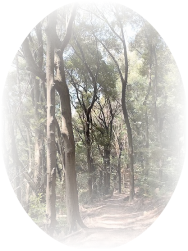

「草枕」（夏目漱石）より
山路を登りながら、こう考えた。
智に働けば角（かど）が立つ。情に棹（さお）させば流される。意地を通せば窮屈（きゅうくつ）だ。とかくに人の世は住みにくい。
住みにくさが高こうじると、安い所へ引き越したくなる。どこへ越しても住みにくいと悟った時、詩が生れて、画(え)が出来る。
人の世を作ったものは神でもなければ鬼でもない。やはり向う三軒両隣にちらちらするただの人である。
ただの人が作った人の世が住みにくいからとて、越す国はあるまい。あれば人でなしの国へ行くばかりだ。
人でなしの国は人の世よりもなお住みにくかろう。

TOP